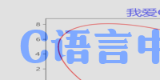
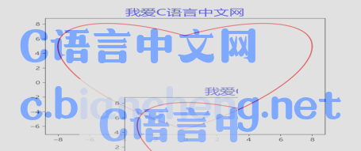

Pillow图像裁剪、复制、粘贴操作
图像的剪裁、复制、粘贴是图像处理过程中经常使用的基本操作，Pillow Image 类提供了简单、易用的 API 接口，能够帮助您快速实现这些简单的图像处理操作。
注意：box 是一个有四个数字的元组参数 (x_左上,y_左下,x1_右上,y1_右下)，分别表示被裁剪矩形区域的左上角 x、y 坐标和右下角 x，y 坐标。默认 (0,0) 表示坐标原点，宽度的方向为 x 轴，高度的方向为 y 轴，每个像素点代表一个单位。
crop() 函数的会返回一个 Image 对象，使用示例如下：
最终，在原图的基础上裁剪出一张像素为 200 * 100 的图像。
下面复制一张原图像的副本，对副本进行裁剪、粘贴操作，代码如下所示：
图像裁剪操作
Image 类提供的 crop() 函数允许我们以矩形区域的方式对原图像进行裁剪，函数的语法格式如下：crop(box=None)box：表示裁剪区域，默认为 None，表示拷贝原图像。
注意：box 是一个有四个数字的元组参数 (x_左上,y_左下,x1_右上,y1_右下)，分别表示被裁剪矩形区域的左上角 x、y 坐标和右下角 x，y 坐标。默认 (0,0) 表示坐标原点，宽度的方向为 x 轴，高度的方向为 y 轴，每个像素点代表一个单位。
crop() 函数的会返回一个 Image 对象，使用示例如下：
"""
裁剪图像
"""
im = Image.open("C:/Users/Administrator/Desktop/C语言中文网.png")
box =(0,0,200,100)
im_crop = im.crop(box)
im_crop.show()
输出图像显示如下：

图1：图像裁剪
图1：图像裁剪
最终，在原图的基础上裁剪出一张像素为 200 * 100 的图像。
图像拷贝和粘贴
拷贝、粘贴操作几乎是成对出现的，Image 类提供了 copy() 和 paste() 方法来实现图像的复制和粘贴。其中复制操作（即 copy() 方法）比较简单，下面主要介绍 paste() 粘贴方法，语法格式如下所示：paste(image, box=None, mask=None)该函数的作用是将一张图片粘贴至另一张图片中。注意，粘贴后的图片模式将自动保持一致，不需要进行额外的转换。参数说明如下：
- image：指被粘贴的图片；
- box：指定图片被粘贴的位置或者区域，其参数值是长度为 2 或者 4 的元组序列，长度为 2 时，表示具体的某一点 (x,y)；长度为 4 则表示图片粘贴的区域，此时区域的大小必须要和被粘贴的图像大小保持一致。
- mask：可选参数，为图片添加蒙版效果。
下面复制一张原图像的副本，对副本进行裁剪、粘贴操作，代码如下所示：
im = Image.open("C:/Users/Administrator/Desktop/C语言中文网.png")
#复制一张图片副本
im_copy=im.copy()
#对副本进行裁剪
im_crop = im_copy.crop((0,0,200,100))
#创建一个新的图像作为蒙版，L模式，单颜色值
image_new = Image.new('L', (200, 100), 200)
#将裁剪后的副本粘贴至副本图像上，并添加蒙版
im_copy.paste(im_crop,(100,100,300,200),mask=image_new)
#显示粘贴后的图像
im_copy.show()
输出的显示结果，如下所示：

图2：图像复制粘贴
图2：图像复制粘贴
关注公众号「站长严长生」，在手机上阅读所有教程，随时随地都能学习。内含一款搜索神器，免费下载全网书籍和视频。

微信扫码关注公众号